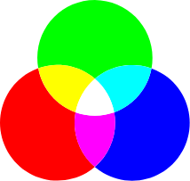
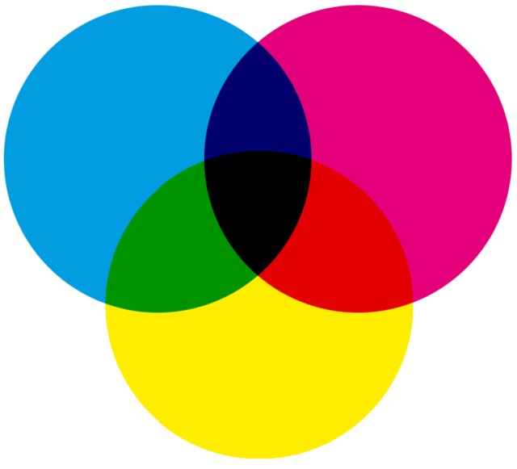

Farger på datamaskinen
For å få farger på bildene våre, bruker man ofte farger på bildepunktene våre Datamaskinen trenger flere tall for å kunne beskrive hvert punkt. De to vanligste måtene å beskrive farger på er ved hjelp av RGB - verdier eller CMYK - verdier

